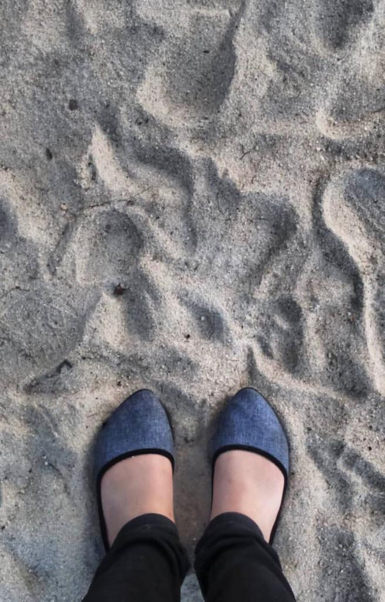

This is a video from Chinatown at night.
This is because, when I am there, the time and atmosphere I like the most is at night.
When the night comes the situation there is very lively and the various activities done
by them and their city also looks very beautiful. When the night comes, our family also
likes to go for a walk to see their beautiful city and while shopping with them.

This is one of the pictures when I was there,
there are not many because the picture has been saved in another document so I can't show it,
only this one. But what I can say is that it is very interesting there and many people think that
their city is not clean and so on but when I get there it is me who I respect is their place than
when I get to their airport I don't even see garbage scattered around. Everything is clean and tidy.
That matter until I returned to Malaysia. Their city is very clean and tidy. Regarding the price of the
goods sold there, some goods sold are expensive and some are cheap. but even though the items sold are
very beautiful and of good quality, they are not worth the cheap price. That's one of the things I like
about going there. And actually what we know is that many items in Malaysia actually come from their country.
But when sent to Malaysia, the item is sold at a very expensive price. My family and I feel very satisfied
shopping there because we can get cheap prices and good quality. Regarding the activities we did there, we
mostly just walked around visiting the interesting areas there and took a lot of pictures. As for the food,
that's one of the things I don't like, this is because there aren't many halal restaurants there.
Yes, but the price is expensive and not tasty. that's the only shortcoming. Overall Vacation to China is the best for me.
haha Thanks <3